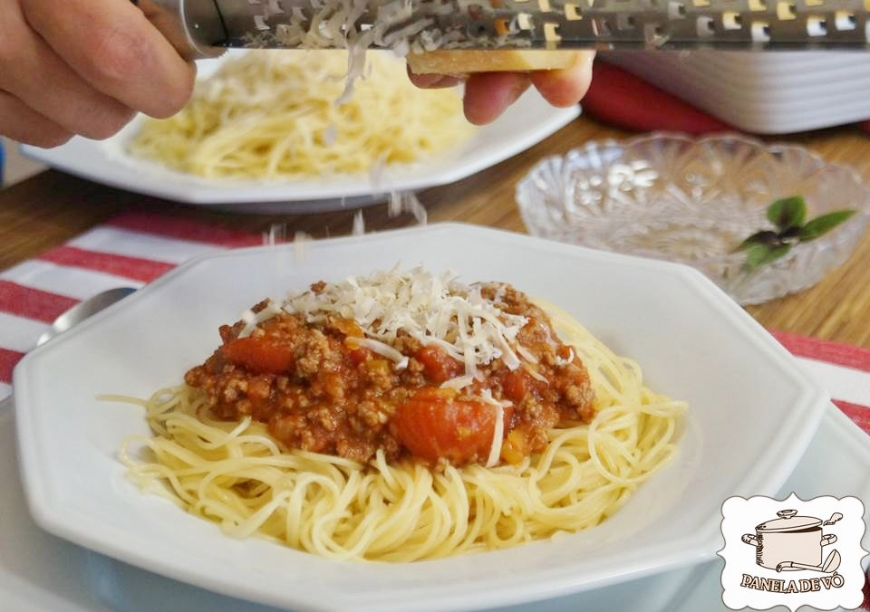

Home

Receita de Espaguete a Bolonhesa
Quem é que na hora que bate aquela fome não fica com vontade de comer um prato bem cheio de espaguete à bolonhesa? E nem precisa
ter um pé na descendência italiana, pois até hoje não conheci ninguém que não goste dessa gostosura com sabor de casa da Nonna e
que acaba com qualquer mau humor. As crianças então…adoram!! Mesmo os vegetarianos dão um jeito comendo com carne vegetal, que
“quaaase” não deixa a desejar.
A receita é rápida, prática e deliciosa…perfeita para o almoço de domingo e que vai muito bem à qualquer dia e hora! Que tal agora??
Ingredientes para o molho
- - 500 g de patinho bem limpo e moído
- - 02 colheres de sopa de azeite
- - 02 dentes de alho
- - 01 cebola pequena picada
- - 01 cenoura pequena ralada
- - 1/2 xícara de aipo ou alho poró picado
- - 1/2 xícara de pimentão amarelo picado
- - 02 latas de molho de tomates pelados
- - 1 1/2 colher de chá de sal
- - 01 folha de louro
- - Pimenta do reino à gosto
- - Queijo parmesão ralado à gosto
Massa:
- - 500 g de espaguete de sua preferência
- - 05 litros de água fervente com 1 colher de sopa de sal
Mode de Preparo
- Para o molho, coloque numa panela de fundo grosso o azeite e refogue o alho, cebola, cenoura, alho poró ou aipo e o pimentão tudo bem picadinho.
- Adicione a carne moída, misture e cozinhe por aproximadamente 10 minutos ou até não estar mais crua.
- Coloque o sal e pimenta.
- Abra as latas de molho pelado, corte um pouco os tomates e jogue dentro da panela com a carne.
- Mexa de vez em quando e deixe ferver até engrossar um pouco.
- Ajuste o sal e pimenta à seu gosto.